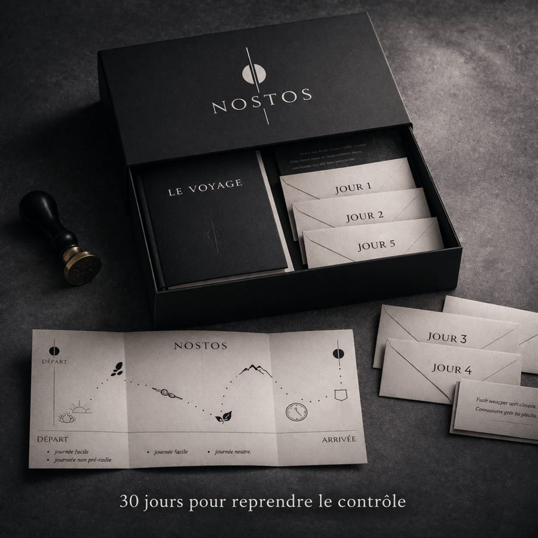

Tu suis une progression logique
Chaque jour tu mets en place une action simple (concernant dopamine, habitudes, réflexes), qui transforme le quotidien petit à petit
Tu te réveilles avec ton téléphone
Il comble chaque silence
Tu sais qu’il te prend trop de temps
C’est un refuge quand tu stress/ est triste/ t’ennuie
Et tu t'en veux
Ton téléphone est conçu pour voler ton attention. Et il y a des solutions pour l’utiliser quand tu le décides.
Un programme simple, basé sur les neurosciences, pour transformer ton rapport à ton téléphone.
Comment ça marche
Chaque jour tu mets en place une action simple (concernant dopamine, habitudes, réflexes), qui transforme le quotidien petit à petit
La pédagogie est au coeur du programme, le fonctionnement de ton cerveau, des applications
Tu utiliseras ton téléphone quand tu le souhaites mais n’en seras plus dépendant(e)
Tu retrouves ton temps, ta motivation, ta concentration
Juste un système qui te fait avancer pas à pas.
Un pas après l’autre.
Un email clair et actionnable.
À mettre en place dans ta journée.
Inspiré des travaux de :
Anna Lembke, Charles Duhigg, Gabor Maté et Cal Newport
Paiement unique | satisfait ou rembourse
(clique pour défiler)
Cognitif
Concentration, volonté, créativité, s’érodent avec la fragmentation constante de l’attention.
Neurochimie
Les pics de dopamine rapides désensibilisent tes récepteurs.
Autonomie
Les algorithmes suppriment tes choix, formatent tes références, tes envies, tes opinions.
Mémoire
Le cerveau ne retient pas le scroll, ce temps qui passe ne laisse que peu de traces.
Nostos te partage les clés et solutions à mettre en place pour ne plus être happé(e) par ton téléphone.
Garantie satisfait ou remboursé à la fin des 30 jours. Un email à bonjour@nostosprogram.com suffit, remboursement dans les 48h.
Non. L'objectif est de reprendre un rapport intentionnel au téléphone pas de l'éliminer. Le programme travaille sur les mécaniques comportementales, pas sur des interdictions. Tu utiliseras ton téléphone mais tu choisiras comment.
Nostos repose sur la compréhension des mécanismes, la modification des déclencheurs environnementaux et surtout t'accompagne. Quand tu comprends pourquoi ton cerveau agit ainsi, tu n'as plus besoin de te battre contre lui.
Environ 5 minutes de lecture + 1 action simple à appliquer dans ta journée.
Car Nostos est un programme basé sur les neurosciences, structuré et pour moins de 2€/ jour il te guide pendant 30 jours.

✓1 email quotidien — 30 jours programme complet
✓Explications scientifiques accessibles
✓Carte de progression + guide anti-rechute
✓Plan de continuité au-delà de 30 jours
Paiement unique | satisfait ou rembourse
bonjour@nostosprogram.com
Le créateur de Nostos
J’ai longtemps été happé par mon téléphone sans vraiment m’en rendre compte.
Puis j’ai réalisé tout ce qu’il me prenait : du temps, de l’énergie, de la concentration et surtout l’élan d’agir.
Alors je me suis formé sur le sujet : neurosciences, dopamine, addictions, attention.
En comprenant les grands principes qui permettent de se détacher durablement de son téléphone, j’ai créé Nostos : un cadre simple pour implémenter progressivement ces changements et reprendre le contrôle de son utilisation.
Et plus j’avançais, plus je réalisais que je n’étais pas seul.
Autour de moi, mes amis, mon entourage, beaucoup ressentaient la même chose : cette impression de perdre du temps sans vraiment réussir à changer.
J’ai alors ressenti le besoin de partager cette prise de conscience, mais surtout une manière concrète de passer à l’action, simplement, progressivement et sans culpabiliser.
Nostos est né de cette recherche.